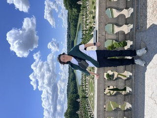

Welcome to My Portfolio

I'm Toby Bourne, an Information Science student at Michigan State University
interested in digital media, social media, technology, and content creation.
This portfolio highlights some of my work, projects, and experiences as I
develop my skills in web development and digital content.
About Me
I am an Information Science student at Michigan State University with an
interest in technology, digital media, and social media marketing.
I enjoy learning how technology can be used to create engaging digital
experiences and connect people with content. I am especially interested
in web development, content creation, and the growing role of artificial
intelligence in digital media.
Through my coursework and personal projects, I am developing skills in
web development, digital communication, and creative problem-solving.
My goal is to continue building practical experience while creating
work that reflects my interests in technology and online media.
Learn more about
Michigan State University
.